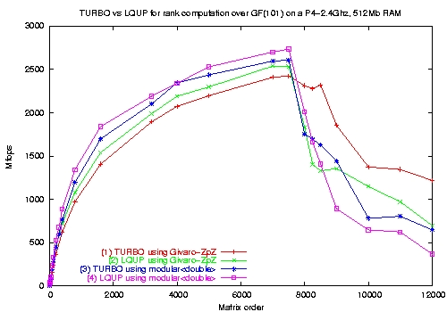

FFPACK Triangularization
The second part of this project is the FFPACK package, grouping different linear algebra routines of higher level. Here again a core routine, the LQUP factorization, is used in every other algorithm.
This package provides the following routines over a finite field:
- LUP-LSP-LQUP and out-of-core (TURBO) matrix factorization
- Determinant, Rank computation
- Issingular determination
- Inversion
- Characteristic and minimal polynomial computation
Here again, the performances are very good: A 7500*7500 matrix is factorized in 103 seconds with a speed of 2733 Mops on a P4-2.4Ghz.
See here also the performances obtained for rank computations :

For comparison, the numerical LUP factorization of a 3000*3000 matrix using Lapack spends 6 seconds whereas our version over finite fields needs 8.5 seconds.